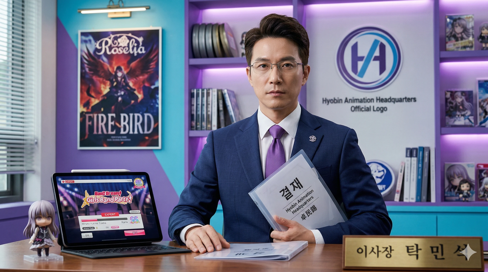

| 이름 | 탁민석 (Tak Min-seok) 卓民錫 |
|---|---|
| 출생 | 1986년 10월 26일 (만 40세) 당시 효빈직할시 북구 고송동 (현 효빈광역시 북구 고송동) |
| 국적 | 대한민국 |
| 학력 | 고송고등학교 (졸업) 효빈대학교 예술대학 (시각디자인학 / 학사) 효빈대학교 경영대학원 (문화콘텐츠경영학 / 석사) |
| 현직 | 효빈애니메이션본부 제2대 이사장 (2022.07 ~ ) |
| 경력 | 전) 일본 애니메이션 기획사 'A사' 프로듀서 전) 고송동 애니메이션 사수 연합 의장 |
| 별명 | 미나토 유키나의 충견, 고송동의 푸른 불꽃 2.5차원의 지배자, 절대음감 탁이사 성공한 씹덕 |
| MBTI | INTJ |
대한민국의 애니메이션 기획자 출신 관료이자, 효빈광역시의 서브컬처 부흥을 이끄는 광기의 천재 기획자. 현재 효빈애니메이션본부(HAH) 제2대 이사장이다.
이미사, 천리나, 고하나, 강토리 등 90년대생(혹은 80년대 후반)의 '실무형 젊은 여성 기관장'들이 현장을 꽉 잡고 있다면, 탁민석 이사장은 이세희 HSCO 대표와 함께 그 위에서 거대한 판을 짜는 '80년대생 1세대 오타쿠 리더' 포지션을 맡고 있다.
효빈시를 단순한 한국의 지자체가 아니라 '실존하는 2D 세계'로 만들기 위해, 일본의 거대 서브컬처 기업(Bushiroad, Sunrise 등)들과 직접 라이선스 채널을 가동하여 도시를 통째로 덕질 테마파크로 갈아엎고 있다. 한마디로 세금으로 합법적인 덕질을 하는 성공한 씹덕의 표본.
"당신들, 효빈의 문화에 전부를 걸 각오는 되어 있어?"
효빈 서브컬처의 메카인 북구 고송동 토박이다. 2006년, 최악의 암군 윤대환 시장이 고송동 애니메이션 센터 부지를 밀어버리고 도로교통통제소로 강제 전환하려 했을 때, 당시 효빈대 시각디자인학과 복학생이었던 그는 '고송동 애니메이션 사수 연합'의 의장을 맡아 결사항전을 주도했다.
당시 윤대환이 보낸 철거 용역들이 포크레인을 끌고 들이닥쳤을 때, 확성기를 들고 바리케이드 위로 올라가 "문화는 파괴할 수 있어도, 우리의 영혼(Soul)은 파괴할 수 없다!!"라고 외치며 수백 명의 덕후들과 함께 '오타쿠 스크럼(Scrum)'을 짰다.
용역 깡패들이 어안이 벙벙해진 사이, 펜라이트(야광봉)를 휘두르며 애니메이션 오프닝을 떼창으로 부르며 진입을 막아낸 일화는 지금까지도 효빈시 오타쿠들 사이에서 전설의 레전드로 회자된다. [1] 이 사건을 계기로 그는 고송동의 살아있는 영웅으로 등극했다.
대학 졸업 후 훌쩍 일본으로 건너가 아키하바라의 밑바닥부터 굴렀다. 라멘으로 끼니를 때우며 인맥을 쌓고, 특유의 근성과 기획력으로 일본 애니메이션 업계에서 프로듀서까지 올랐다. 당시 그의 별명은 '아키하바라의 흑표범'(...).
서브컬처 본고장에서 직접 뒹굴며 라이선스 협상 스킬과 현지 인맥을 싹쓸이한 뒤, 고향으로 돌아와 박현만 시장 체제에서 애니메이션본부 설립의 밑그림을 짰다.
이후 2022년 박효빈 시장이 취임하자, "이 사람만큼 현장에 미친(?) 전문가는 없다"는 압도적인 평가를 받으며 애니메이션본부 이사장으로 파격 발탁되었다. 시청 공무원들도 이 사람의 결재 서류 앞에서는 눈치를 본다고 한다.
그의 모토는 최애 캐릭터인 미나토 유키나의 대사인 "No Compromise (타협은 없다)"다.
효빈시가 추진하는 L-Project(러브 라이브 성지화 사업)에서 캐릭터들이 묵을 가상의 아파트 건축 감수를 맡았을 때의 일화가 유명하다. 건설사가 가져온 캐릭터 방의 벽지 재질과 CMYK 인쇄 색감이 애니메이션 원작 설정과 미세하게 맞지 않는다는 이유로 시공 인가를 5번이나 반려하는 흉악한 짓을 저질렀다.
결국 시공사 사장이 본부로 찾아와 "제발 살려달라, 이 이상 똑같이 만드는 건 현대 건축 공학으로 무리다"라고 빌었으나, "유키나씨라면 타협하지 않았을 겁니다"라며 냉정하게 컷오프했다. 시공사 사장: 유키나가 대체 누군데 이 미친놈아!!!
애니메이션본부 신입 직원 채용 시, 이력서나 토익 점수보다 '뱅드림(걸파) 플레이 로그'를 더 중요하게 본다는 흉흉한 소문이 있다.
실제로 최종 면접장에 아이패드 프로가 비치되어 있었으며, 면접자에게 "EXPERT 27레벨 곡을 한 손으로 풀 콤보 칠 수 있는가?"라는 비공식 질문을 던졌다는 증언이 속출했다. 다행히 "못 친다"고 해서 떨어뜨리는 건 아니지만, "칠 수 있다"고 대답하면 그 자리에서 즉석 라이브를 시키고 본인이 직접 판정을 매긴다고 한다(...). 면접자에겐 그야말로 지옥의 오디션
본부 로고 색상을 두고 박효빈 시장(Liella! 탕 쿠쿠 오시)과 피 튀기게 대립한 사건.
탁 이사장은 무조건 유키나의 상징색인 보라색(#881188)으로 해야 한다며, "보라색이 아니면 내 인생은 시안(Cyan)처럼 창백해질 것"이라는 해괴한 드립과 함께 사표를 흔들며 시장실 앞에서 1인 시위를 벌였다.
문제는 유키나의 보라색(#881188)이 효빈 도시철도 6호선의 노선색과 토씨 하나 안 틀리고 똑같았다는 것. "시민들이 6호선 타려다 애니메이션본부로 오면 책임질 거냐"는 시장의 합리적인 지적에 결국 꼬리를 내렸고, 타협점으로 쿠쿠의 파란색과 유키나의 보라색을 섞은 '사이버 시안(Cyber Cyan)'으로 결정되었다. [2]
B-Project(뱅드림 성지화)를 위해 일본 본사(Bushiroad) 임원들과 만났을 때, 엄청난 라이선스 비용 때문에 시청 예산팀이 난색을 표했다. 이때 탁 이사장이 직접 술자리(회식)를 주도하며 유창한 비즈니스 일본어로 분위기를 띄운 뒤, 노래방에서 'FIRE BIRD'와 'Snow halation'을 원키로 완벽하게 소화해 냈다.
그의 압도적인 '덕심'에 감동한 일본 임원진이 그 자리에서 "라이선스 비용 30% 감면"을 약속하며 눈물의 계약을 체결했다는 전설이 있다. 이를 효빈시 행정계에서는 '판권 성배전'이라 부른다.
박효빈 (효빈광역시장): 상관이자 성덕 라이벌. 박 시장은 파란색(탕 쿠쿠) 오시이고 이사장은 보라색(유키나) 오시라 자주 티격태격하지만, 사실 박 시장의 애창곡도 'FIRE BIRD'일 정도로 두 사람의 서브컬처 취향은 소름 돋게 일치한다. 사석에서는 밤새 애니메이션 토론을 벌이는 오타쿠 콤비.
이세희 (HSCO 대표이사): 2006년 윤대환의 탄압에 맞서 싸운 '80년대생 저항군' 동지. 이세희가 라이브 하우스 STARRY를 지킬 때, 탁민석은 고송동을 지켰다. 현재는 HSCO에서 열리는 HAF의 기획(탁민석)과 공간 운영(이세희)을 분담하는 완벽한 비즈니스 파트너다.
강토리 (효빈 컬쳐레스풀 센터장): '재봉틀의 악마'. 탁 이사장이 등신대 유키나에게 입힐 실제 사이즈 무대 의상을 강토리에게 발주한 적이 있다. 단추의 위치가 1mm 틀렸다고 태클을 걸러 갔다가, 강토리가 1분당 1,500바느질로 눈앞에서 수선해 내는 것을 보고 그 자리에서 무릎을 꿇었다고 한다. 물리적 깡패 앞에서는 기획자도 얌전해진다.
천리나 (효빈정보산업진흥원장): 리나가 개발한 '리나쨩 보드'를 보고 "완벽한데 고양이가 부족하다"고 훈수를 두었다가, 빡친 리나에게 역해킹을 당해 이사장실 컴퓨터 바탕화면이 24시간 동안 기괴한 초근접 고양이 사진으로 강제 고정된 적이 있다. 이후로는 리나 원장에게 절대 개기지 않는다.
생일이 10월 26일로, 공교롭게도 미나토 유키나의 생일과 완벽하게 일치한다. 본인은 이를 'Destiny(운명)'라 칭하며, 매년 10월 26일을 애니메이션본부 자체 공휴일로 지정하려다가 시청 감사실에 된통 털리고 취소했다. 대신 그날은 전 직원이 보라색 아이템을 착용하고 출근해야 하는 '퍼플 데이(Purple Day)'로 강제 지정되어 있다. 직원들: 살려줘 제발
이사장실에서는 1년 365일 Roselia의 노래가 흘러나온다. 직원들 사이에서는 브금 판독기라는 것이 존재하는데, 이사장의 기분이 최상일 때는 'LOUDER'가, 시청에서 예산이 깎이거나 기분이 안 좋을 때는 'BRAVE JEWEL'이 비장하게 흘러나온다. 비서진은 노래 소리만 듣고도 그날 결재를 들어갈지 말지 결정한다고 한다.
본인이 총괄하는 HAF(효빈 애니메이션 페스티벌) 행사 기간 중, 메인 스테이지에 아티스트가 오르면 VIP 석을 박차고 나와 스탠딩 구역에서 일반 관객들과 섞여 완벽한 오타게(ヲタ芸)를 선보인다. 정장을 입은 중년 남성이 미친 듯이 펜라이트를 돌리는 모습을 보고 외국인 관람객들이 "저 사람 댄서냐"고 물어본다는 것은 유명한 밈이다.
애니메이션본부 건물 지하에는 전 세계의 귀중한 애니메이션 원본 필름과 셀화 수만 점을 보관하는 특수 수장고가 실존한다. 지진이나 화재 발생 시 "본인 목숨보다 이 수장고의 필름을 먼저 대피시켜라"는 정신 나간(?) 비공식 매뉴얼이 존재한다는 소문이 돌 정도다.